| Средняя наработка на отказ (T₀) | не менее 26 000 ч (≈ 3 года) |
| Вероятность безотказной работы за 1 год | высокая (основные элементы — покупная ЭРИ с К_н ≪ 1) |
| Среднее время восстановления | не более 30 мин |
| Срок службы каждого компонента | не менее 5 лет |
| Уровень качества ЭРИ | не ниже ОТК |
| Доля отказов от старения | не более 10% |
Все рассчитанные коэффициенты нагрузки (K_н) элементов значительно меньше 1, что свидетельствует о работе компонентов в щадящих режимах и обеспечивает высокий запас надёжности.
Наиболее нагруженный элемент — конденсаторы С3, С4 (K_н = 0,452), что остаётся в пределах нормы.
Схема реализована в среде Proteus Professional. Регулируемый двухканальный ЛБП включает: выпрямитель (диодный мост KBPC110), сглаживающие конденсаторы (2000 мкФ × 2), стабилизатор LM317T, три подстроечных резистора (RV1 — ограничение тока, RV2 — грубая регулировка U, RV3 — точная регулировка U), световую индикацию на трёх светодиодах и защитные диоды.
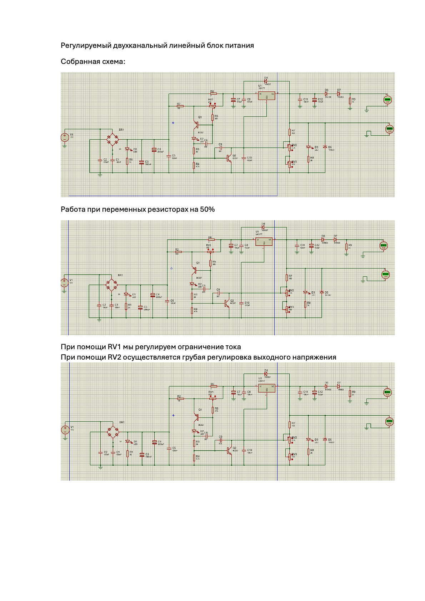
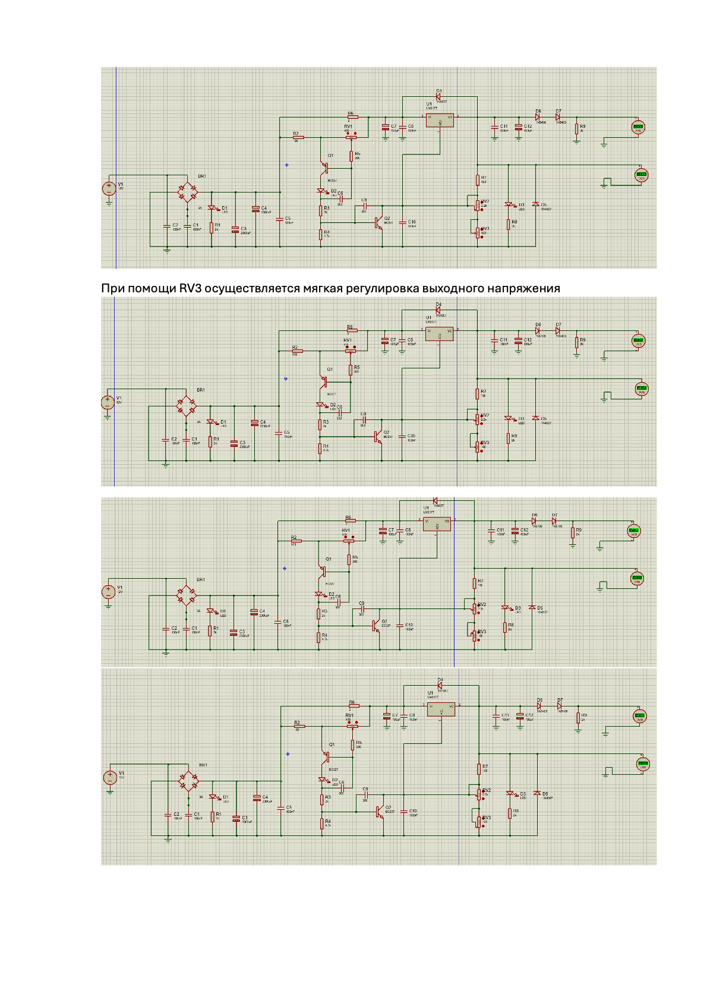
Топологическое моделирование выполнено в среде EasyEDA. Разработана двусторонняя печатная плата с размещением SMD-компонентов по ГОСТ.
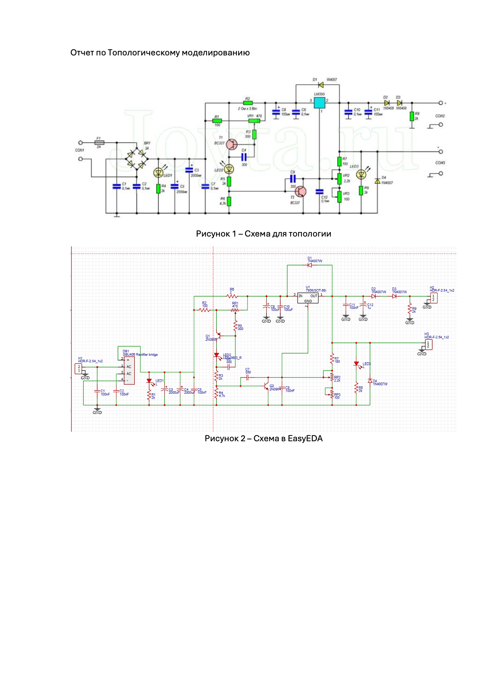
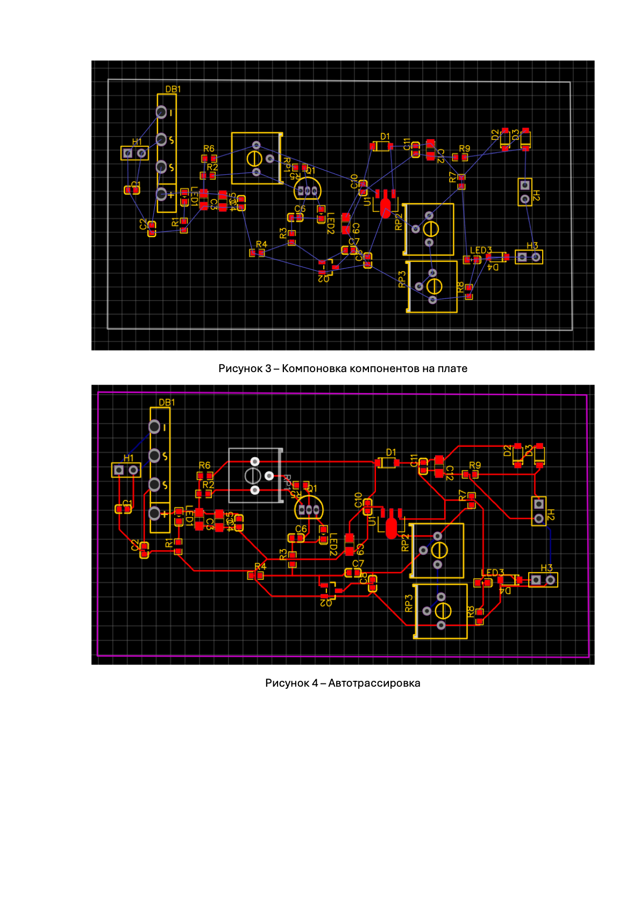
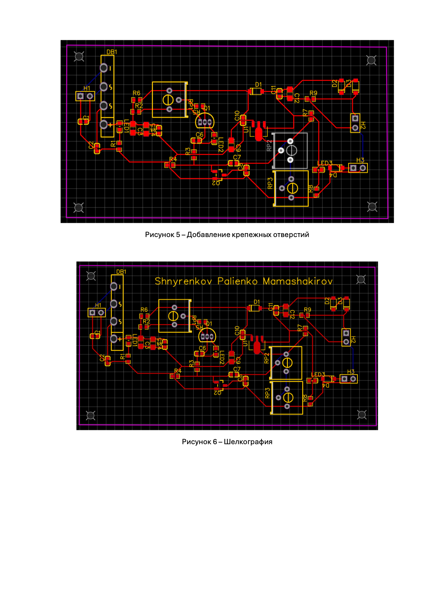
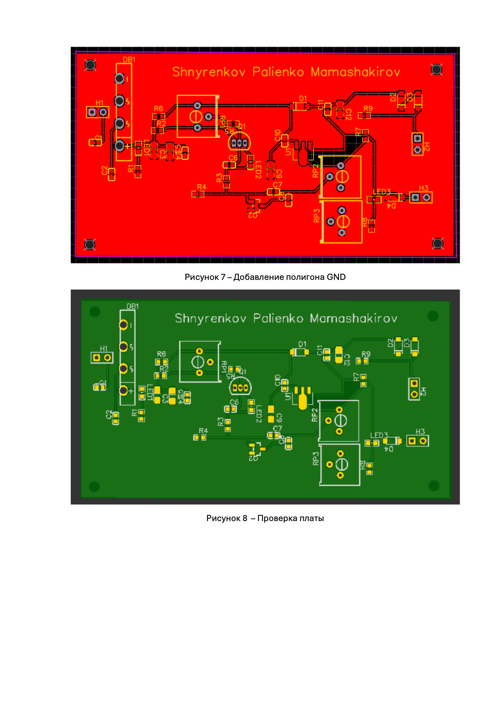
Тепловое моделирование выполнено в среде SOLIDWORKS Simulation методом стационарного теплового анализа с конвекцией на открытых поверхностях. Корпус, крышка и крепёж исключены из расчёта для повышения устойчивости модели.
| Тип анализа | Стационарный тепловой |
| Температура окружающей среды | 300 К (27°C) |
| Коэффициент теплоотдачи | 20 Вт/(м²·К) |
| Решатель | Intel Direct Sparse |
| Элемент | Расчётная мощность | Значение, Вт | К_н |
|---|---|---|---|
| R1 | 41,9 мВт | 0,0419 | 0,3352 |
| R9 | 19,8 мВт | 0,0198 | 0,1584 |
| RV2 | 16,4 мВт | 0,0164 | 0,0328 |
| R8 | 13,2 мВт | 0,0132 | 0,1056 |
| R7 | 8,7 мВт | 0,0087 | 0,0696 |
| R6 | 0,320 мВт | 0,000320 | 0,0026 |
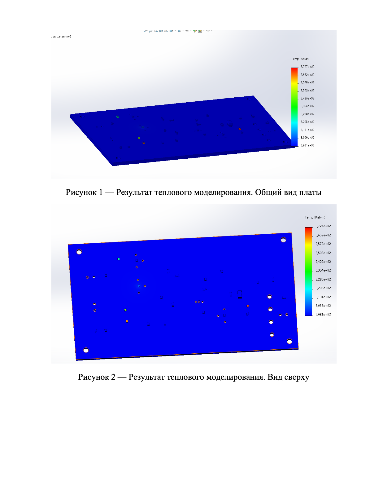
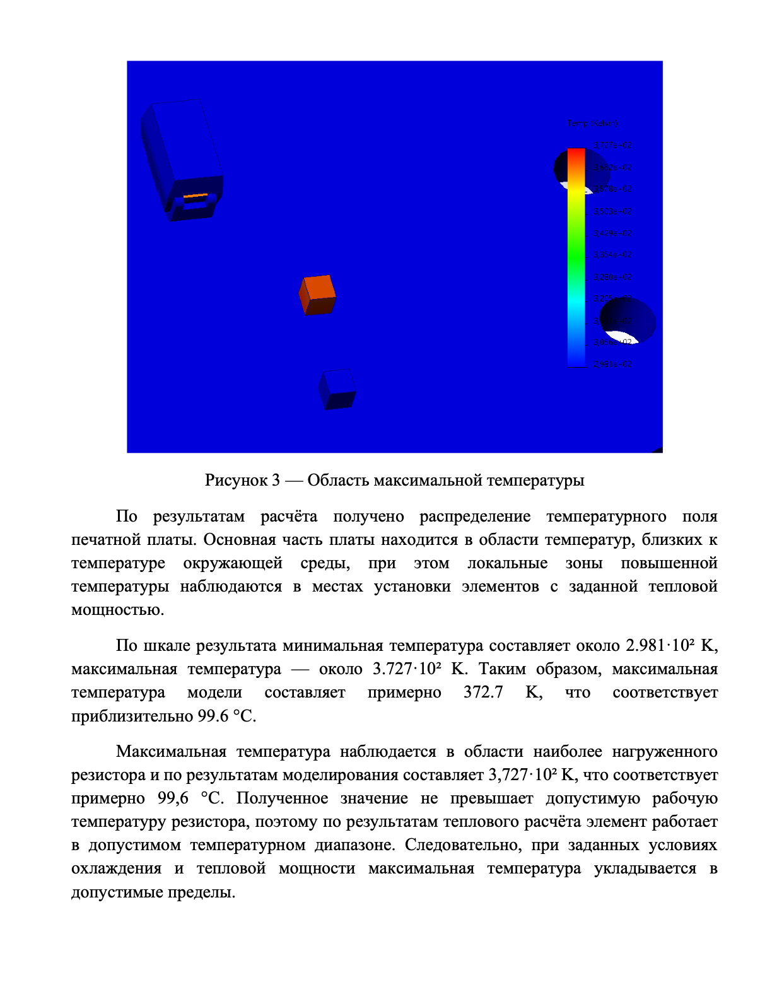
Механическое моделирование выполнено в среде SOLIDWORKS Simulation для сборки устройства в корпусе. Исследовано воздействие на устройство при падении с высоты 1500 мм.
| Деталь | Материал | Примечание |
| Корпус + крышка | ABS-пластик | конструктивный материал |
| Печатная плата | FR4 (стеклотекстолит) | – |
| Высота падения | 1500 мм (1,5 м) |
| Коэффициент демпфирования контакта | 0 |
| Трение в плоскости | 0 |
| Расчётный шаг сетки | 25 мм, элементы 85 093 |
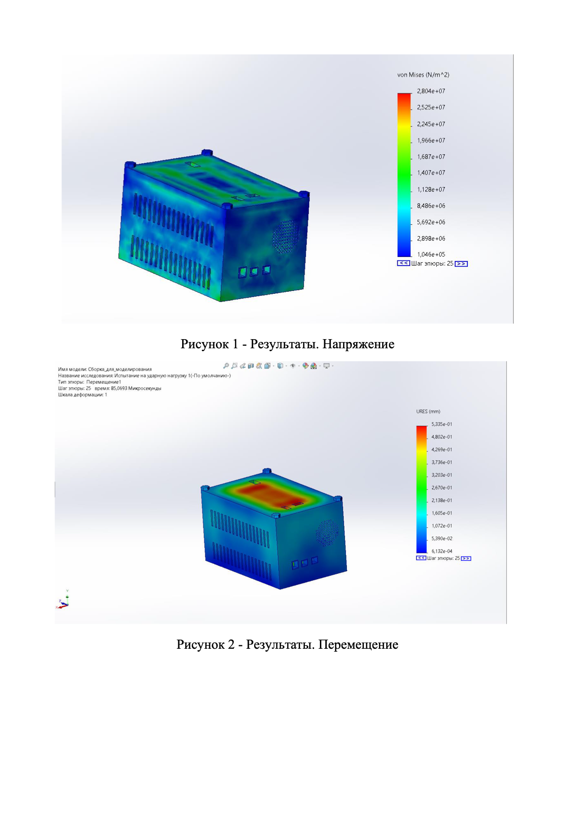
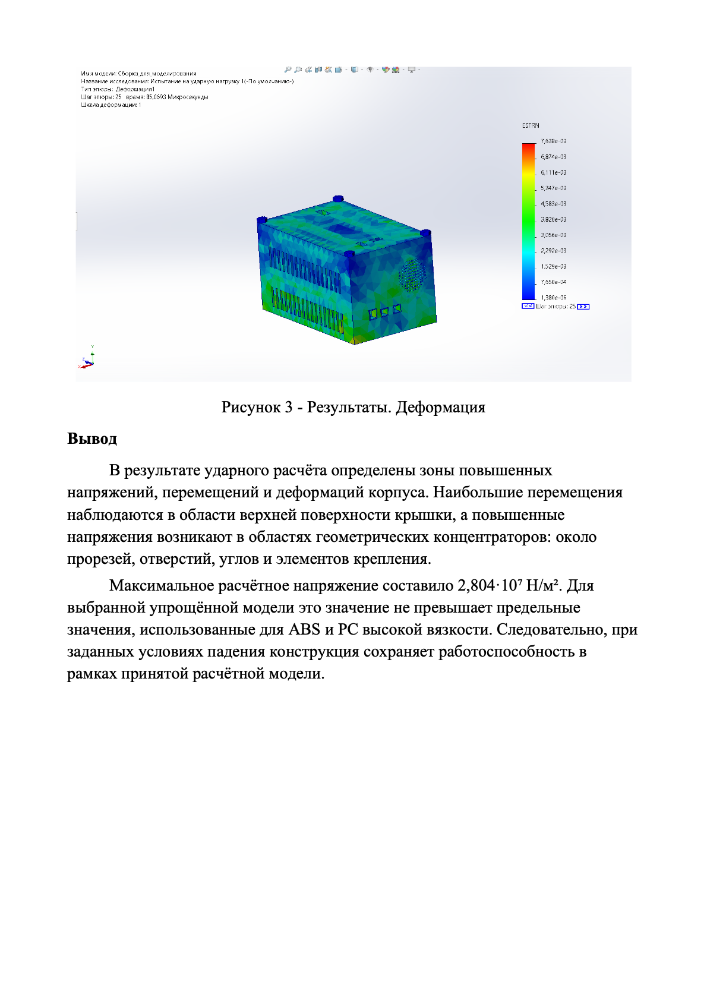
3D-модели разработаны в среде Компас-3D. Созданы детали: корпус, крышка, винт крышки, плата. Выполнена сборка изделия.
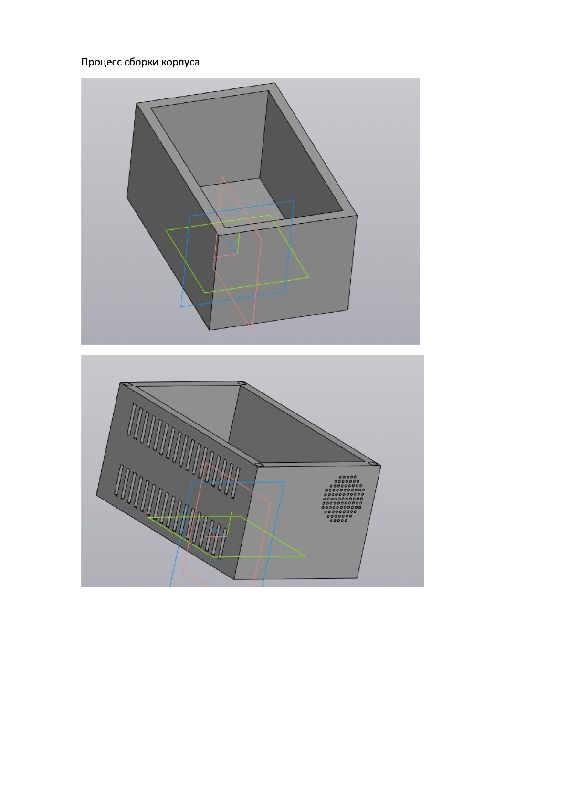
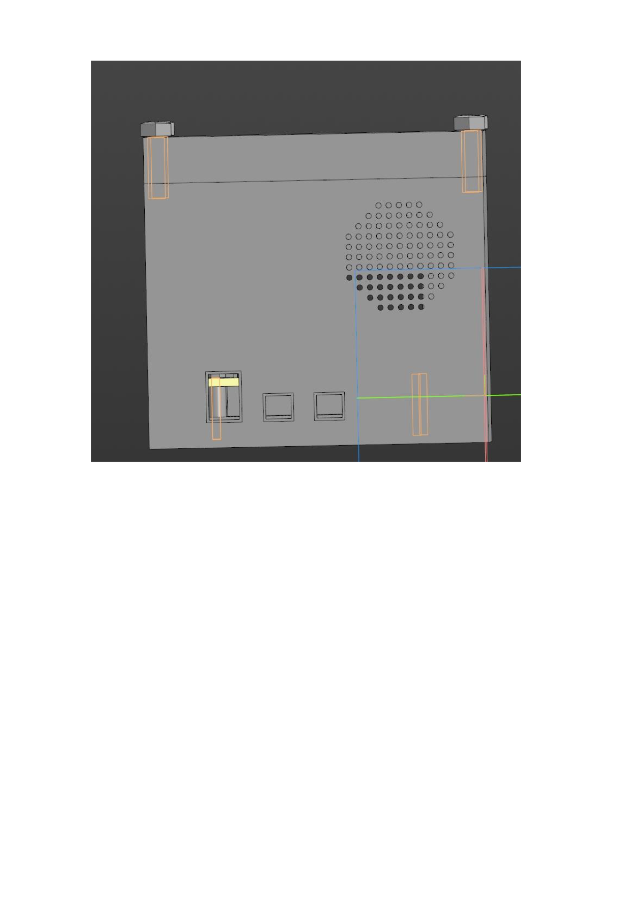
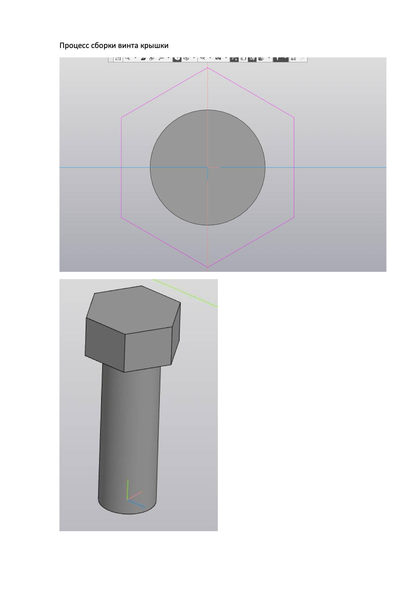